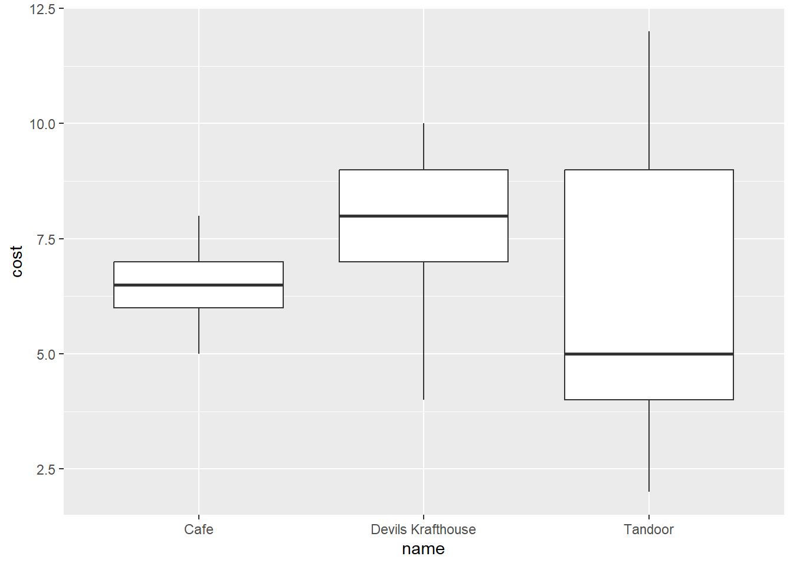
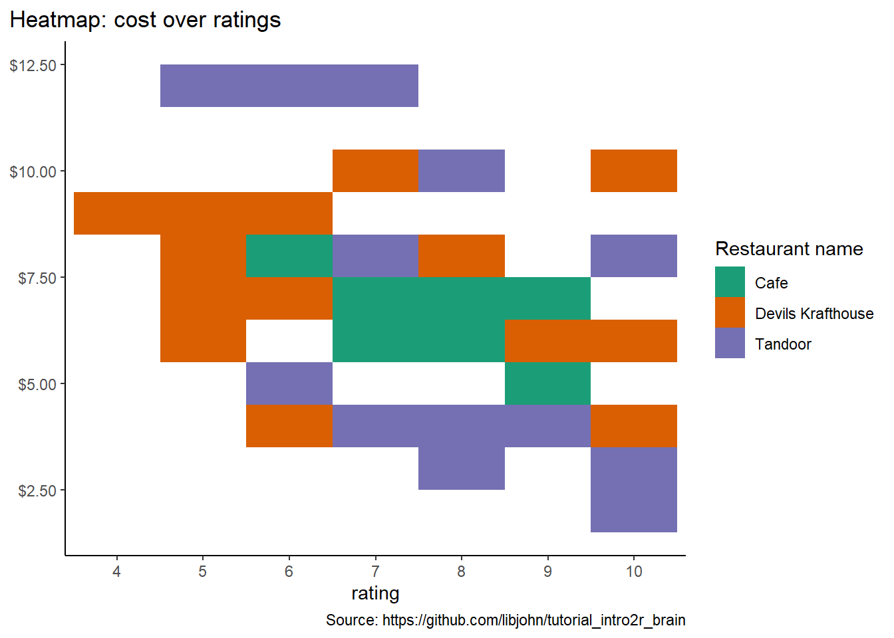

library(tidyverse)Import Data
Did you start with a Project?
Reproducibility starts at the foundation! Always begin by opening a project. See New Projects for tips.
In this workshop we recommend the Tidyverse approach to learning and using R
Below are some of the core tidyverse packages. There are many more very handy tidyverse packages.
| package | use | package | use |
|---|---|---|---|
dplyr |
data wrangling | forcats |
categorical data / factors |
ggplot2 |
visualization | lubridate |
dates and times |
readr |
import CSV | stringr |
regular expressions / strings |
purrr |
iteration / functional programing | tidyr |
pivot data |
readxl |
import Excel files | haven |
import SPSS/Stata/SAS |
Quick and easy
It’s way better and hardly any more effort to follow the steps below, but if you’ve gotta get going, try this

Load library packages
Import data
In RStudio,, in the Files quadrant and tab, click the data folder, then left-click the brodhead_center.csv file. Using the context menu, choose the Import Dataset… option. Once inside the data wizard, you can paste the necessary code into the code chunk below
# library(readr)
brodhead_center <- read_csv("data/brodhead_center.csv")
# view(brodheadCenter)
Easy way to write read_csv or any data import code…
Writing the import data function can be tricky. Try the import wizard pictured above. THEN, paste the code from the Code Preview section into your script.
{kind=link}
Look at the data object
Now that you’ve assigned the output from the read_csv function to the name brodhead_center, simply call that object name in a code chunk.
brodhead_centerVisualize your data with {ggplot2}
Here’s a quick teaser on visualizing data. Read more in the visualization chapter.
brodhead_center |>
ggplot(aes(x = name, y = cost)) +
geom_boxplot() 
brodhead_center |>
ggplot(aes(x = rating, y = cost)) +
geom_point(aes(color = name))Warning: Removed 3 rows containing missing values (`geom_point()`).
Show the code
brodhead_center |>
drop_na(rating, cost, name) |>
ggplot(aes(x = factor(rating), y = cost)) +
geom_tile(aes(fill = name)) +
scale_y_continuous(label = scales::dollar) +
scale_fill_brewer(palette = "Dark2") +
labs(x = "rating", y = NULL, title = "Heatmap: cost over ratings",
caption = "Source: https://github.com/libjohn/tutorial_intro2r_brain",
fill = "Restaurant name") +
theme_classic() +
theme(plot.title.position = "plot")